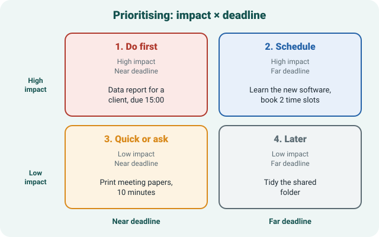

K5 · Planning and keeping work commitments › Level 3 Secure
Prioritise competing tasks and renegotiate deadlines
This lesson completes Sheet 1: Weekly task board of your 90-day notebook. Print template. If a 5-column task list is new to you, take Track your tasks and flag delays early first.
1. Objectives
- Sort the week's tasks into 4 boxes by impact and deadline, with a time estimate for each.
- Write a message asking someone to choose a priority or move a deadline, with a concrete proposal.
2. Retrieval warm-up
- What are the columns of a 5-column task list?
- What are the 4 parts of an early-warning message when you might miss a deadline?
Answers
- Task, result, deadline, given by, status.
- Status, reason, options, request.
3. Explanation
After a few weeks, work arrives from several directions. If you do tasks in the order they arrive, important work slips. You need a quick way to sort.
Step 1. Ask two questions about each task.
- Impact: if this is late, who is affected? Customers, money and safety mean high impact.
- Deadline: a deadline in the next 1–2 days is near.

Step 2. Estimate the time. Write minutes or hours beside each task. Add them up and compare with the time you really have this week. New people often underestimate. Add about a third for any task you have never done before.
Step 3. When there is not enough time, ask early. Do not quietly drop someone's task. Do not silently work late and still miss the deadline either.
A message asking for a priority decision
- Name the clashing tasksTask, deadline, who gave it.
- State your limit"I can only finish one of these before 15:00."
- Make a concrete proposalWhich first, and when the other will be done.
- Ask for a decision"Could you choose the order for me?"
If two different people both give you urgent work, ask your direct manager. They have the authority to decide the order.
Renegotiating the scope is another option. For example: "I'll send the main figures before 15:00. Could the charts follow tomorrow morning?"
4. Workplace example
Hypothetical scenario. Hana has worked in sales for 5 weeks at an office equipment distributor. On Tuesday morning she has 4 tasks.
| Task | Given by | Deadline | Estimate | Box |
|---|---|---|---|---|
| Quote for a school customer | Team leader | 15:00 today | 2 hours | 1 |
| Enter 40 old orders into the system | Accounts | Friday | 3 hours | 2 |
| Print papers for the afternoon meeting | Department head | 13:30 today | 15 minutes | 3 |
| Reorganise the customer folder | Herself | None | 1 hour | 4 |
Then Mia from accounts messages: "Could you finish entering the orders before 12:00? I need to reconcile them." Hana sees she cannot finish both the quote and the orders.
Hana messages her team leader: "Hi Sam, I'm working on the school quote, due at 15:00. Mia in accounts needs 40 orders before 12:00. I can only finish one task before 12:00. I suggest I do the quote first, then enter the 20 orders Mia needs most by 14:00. Could you choose the order for me?"
Why this works: Hana does not decide for two other people. Her message has the tasks, deadlines, her limit and a proposal. Her team leader only needs to reply "Agreed".
5. Practice
Hypothetical scenario. You are a new administrator at a private kindergarten. On Monday you have: send a parents' meeting notice (due Wednesday, from the principal); count the toy inventory (due end of month); order tomorrow's meals for 120 children (due 16:00 today); answer 15 messages about fees (parents have waited since morning). The principal adds: draft a request to buy a water filter before 16:00.
Sort the 5 tasks into the 4 boxes, with estimates. Write a message to the principal if you cannot finish everything.
Hint 1
Which tasks, if late, affect children or parents straight away? Those are high impact.
Hint 2
The meal order and the request are both due at 16:00. For one of them, you could propose a later time or a short version first.
Model answer
- Box 1 (do first): order the meals (30 minutes); answer the fee messages (45 minutes).
- Box 1 or ask: the water filter request (1 hour). Ask the principal.
- Box 2 (schedule): the parents' meeting notice, on Tuesday morning (1 hour).
- Box 4 (later): the toy inventory, next week (3 hours).
Sample message: "This afternoon I'll order the meals and answer the parents about fees. Could I send a draft of the water filter request at 16:00, and the full version with prices at 10:00 tomorrow? I'll send you the parents' meeting notice to approve by Tuesday lunchtime."
(The tasks and times are hypothetical.)
6. Self-check
Choose an answer. Every option has an explanation.
Question 1. You have 3 tasks. A customer quote is due at 11:00. You could tidy your inbox. A security course is due at month end. Which comes first?
-
Not quite. A quick task is not always important. Tidying your inbox is low impact with a far deadline.
-
Correct. Correct. It affects a customer and the deadline is near, so it goes in box 1.
-
Not quite. It matters, but the deadline is far. Schedule it rather than doing it now.
Question 2. Your team leader and another department head both give you urgent work with the same deadline. What should you do?
-
Not quite. The other person will be surprised when their task is late. Your direct manager should decide the order.
-
Correct. Correct. Your direct manager has the authority. A ready proposal helps them reply quickly.
-
Not quite. This often lowers the quality of both tasks, and it is not sustainable.
Question 3. You estimate a task you have never done will take 3 hours. What should you write on your board?
-
Not quite. Tasks you have never done usually take longer than expected.
-
Correct. Correct. Adding about a third makes your plan more realistic.
-
Not quite. A low estimate leads you to accept more work and then miss deadlines.
Question 4. Which sentence renegotiates the scope?
-
Not quite. This only reports a problem. It has no proposal.
-
Correct. Correct. You split the task into the urgent part and a later part, then ask for agreement.
-
Not quite. Refusing outright with no option is not usually the first step.
7. Reflection
- Last week, which task did you do first only because it arrived first? Which box did it really belong in?
- When did you last underestimate the time a task needed? By how much?
8. Real-world application
Next Monday morning, fill in Sheet 1 for the whole week. Give each task a box and an estimate. At the end of the week, write the real time beside each estimate. Compare them so your next estimates are closer.
9. Metadata
| skill | K5 · Planning and keeping work commitments |
|---|---|
| level | Level 3 · Secure |
| group | N3 |
| framework_map | CSfW: 3a Plan and organise; SkillsFuture CCS: Self Management; NACE: Professionalism (reference only) |
| original | Vietnamese version |
| updated | 2026-11-14 |
Finish the lesson
Mark it as done and the site suggests reviews after 1, 3 and 7 days. The data stays on your device only.
Suggested reviews: